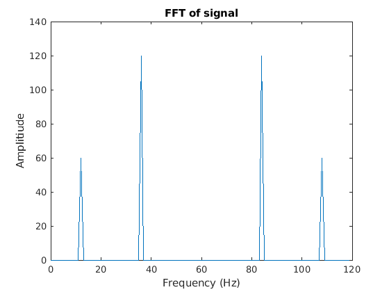
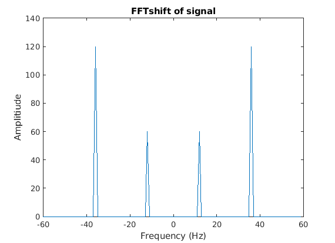
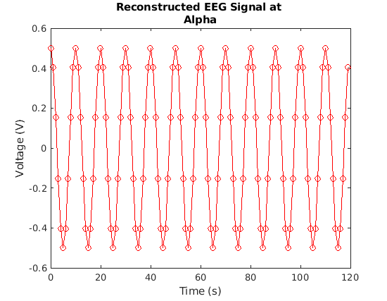
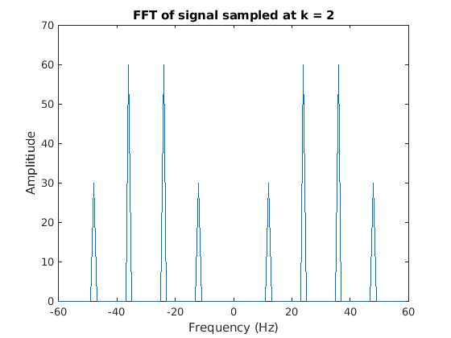

Contents
clear; clc; close all;
a)
Plotting the signal as a function of time and then overlaying the original signal on the subsampled version of the signal with every 4th element of the signal being sampled.
load('myMeasurements.mat') figure(); plot(time, sig, 'ko-') hold on; time_subsampled = time(4:4:end); % Subsampling time with every 4th timepoint sig_subsampled = sig(4:4:end); % Subsampling signal with every 4th datapoint plot(time_subsampled, sig_subsampled, 'r*-') xlabel('Time (s)') ylabel('Voltage (V)') title('EEG Signal')

The subsampled signal does not provide a good summary of the original signal as it ends up choosing some elements in the signal while elementing remaining elements. It appears that subsampling operation is better at capturing low-frequency signals in the original signal.
b)
The EEG signal can be transformed into the frequency domain by performing fft over the signal. We can also compute the shifted fft by using fftshift to center the DC component of the fft. The frequency range goes from 0:N-1 and is scaled by the sampling frequency and the length of the signal vector N. The shifted frequency scale goes from -N/2 to N/2 - 1 with same scaling. Plotting the FFT and the shifted FFT, we get:
fs = 120; % sampling frequency N = length(sig); % length of the signal vector f = (0:N-1) * fs/N; % creating the frequency vector fshift = (-N/2: (N/2)-1) * fs/N; % creating a shifted frequency vector F_sig = fft(sig); % computing the Fourier Transform of signal F_shift_sig = fftshift(F_sig); % Shifting the Fourier Transform so that DC component is in the middle figure(); plot(f, abs(F_sig)) xlabel('Frequency (Hz)') ylabel('Amplitiude') title('FFT of signal') figure(); plot(fshift, abs(F_shift_sig)) xlabel('Frequency (Hz)') ylabel('Amplitiude') title('FFTshift of signal') 
The strongest signal is obtained at 12 Hz which belongs to the Alpha band at 36 Hz which belongs to the Gamma band.
c)
The bandWiseReconstruct computes the signalPart in a given time-range, for a given fftsig within a frequency band. It does so by first computing a vector of zeros of length of F_sig and then adding ones at frequencies of interest within a given bname. It then takes an element-wise product of F_sig with this vector to create an FsigPart which has amplitudes at frequencies of interest and is 0 otherwise:
bandnames = ["Delta", "Theta", "Alpha", "Beta", "Merged"]; % array of frequency bands, merged is the entire frequency range for bname = bandnames signalPart = bandWiseReconstruct(time, F_sig, bname); % computing signalPart from F_sig for given frequency bandname end


We can see that since the FFT of the signal only had peaks in the alpha band and the gamma band, we can see the reconstructed signal or part of signal in these bands whereas for other frequencies, we only see noise.
d)
The upsampled sigals after downsampling can be computed by creating an array of zeros with 1s at positions of downsampling vector and then taking an element-wise product of this vetor with the signal. The fft and fftshift can then be computed for this upsampled signal.
ds_facts = [2, 3, 4]; % downsampling factors for fct = ds_facts sig_downsamp_pos = zeros(1, length(sig)); sig_downsamp_pos(fct:fct:end) = 1; % Creating an array of ones at positons where sub-sampled frequencies will be sig_upsamp = sig .* sig_downsamp_pos; % Upsampling by computing element-wise product of signal with downsampled positions F_sig_upsamp = fft(sig_upsamp); % Computing FFT of upsampled signal F_sig_upsamp_shift = fftshift(F_sig_upsamp); % Computing FFTshift of upsampled signal figure(); plot(fshift, abs(F_sig_upsamp_shift)); % Plotting amplitudes of shifted FFT xlabel('Frequency (Hz)') ylabel('Amplitiude') title(['FFT of signal sampled at k = ', num2str(fct)]) end


Functions
function signalPart = bandWiseReconstruct(time, Fsig, bandname) % Defining frequency bands and their min and max frequency ranges bnames = ["Delta", "Theta", "Alpha", "Beta", "Merged"]; freqs = [[0, 4, 8, 16, 0]; ... [4, 7, 15, 31, 60]]; band_freqs = freqs(:, bnames == bandname); % Computing the min and max frequency bounds for the given bandname bvec = zeros(1, length(Fsig)); bvec(band_freqs(1) + 1: band_freqs(2) + 1) = 1; % Creating a vector of zeros with ones at frequencies of interests FsigPart = Fsig .* bvec; % Taking an element-wise product of Fsig with bvec to create Fsig with amp values at frequencies of intrest and 0 otherwise signalPart = ifft(FsigPart); % Computing inverse FFT of FsigPart figure() plot(time, real(signalPart), 'ro-') % The recomputed signal has imaginary parts which are not of our interest since the signal has only real values xlabel('Time (s)') ylabel('Voltage (V)') title(['Reconstructed EEG Signal at ', bandname]) end